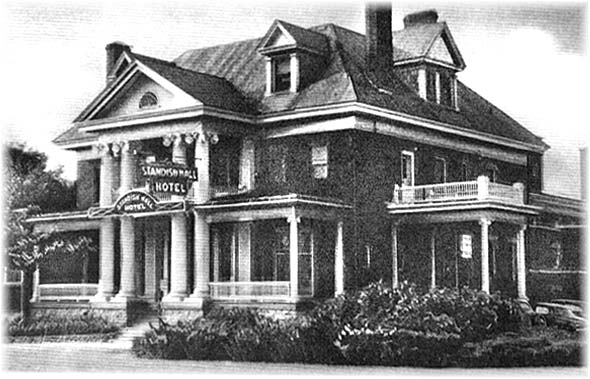
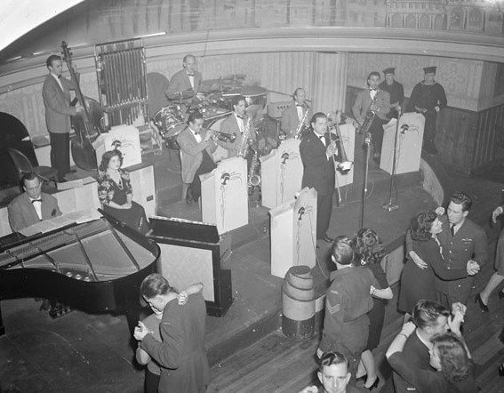
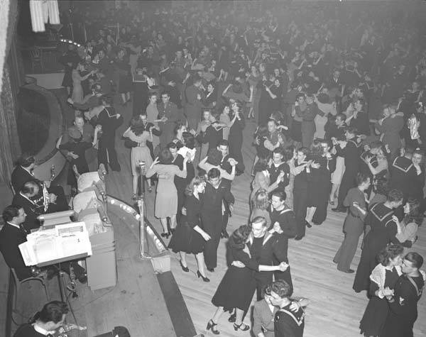
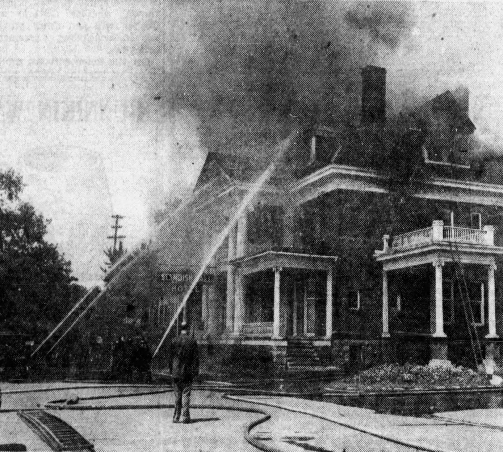
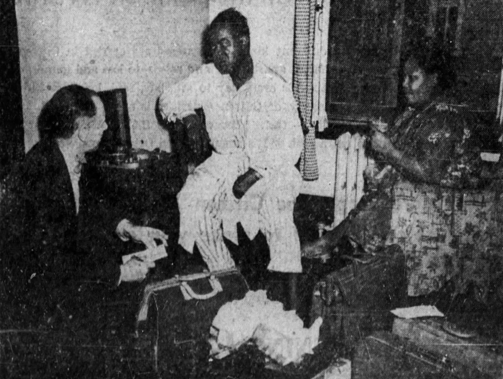
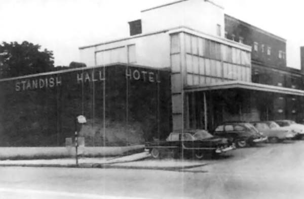

The Standish Hall
What do Louis Armstrong, Ella Fitzgerald, Duke Ellington and Benny Goodman have in common? Besides being some of the biggest names in Big Band and jazz, they all performed at the renowned Standish Hall Hotel at the corner of Rue Montcalm and Alexandre Tache Boulevard in Hull, Quebec.

Private Residence
Standish Hall began as the second residence of Ezra Butler Eddy, a successful lumber baron in the Ottawa area. After his first residence was destroyed by the Great Ottawa-Hull Fire of 1900, Eddy built a magnificent mansion on the same property between 1900-1901. He named the building Standish Hall after the captain of the Mayflower, Myles Standish[1]. Eddy lived in the residence until his death in 1906[2]. His widow eventually sold the building to one of the managers of E. B. Eddy Company at the time, George Henry Millen[3]. Millen lived in the house until his death in 1928 after which his children sold the property to hoteliers Arthur Myre and Joseph Simard in 1929[4]. They added to the existing building and opened it the Standish Hall Hotel in 1930[5].

Source: Topley Studio / Library and Archives Canada / PA-059229
“Little Chicago”
During its heyday, the Standish Hall Hotel was one of the social epicenters of the Ottawa area. The hotel hosted regular dances, weddings and performances by local bands. It even attracted some of the most well-known performers of the day:
- Duke Ellington: performed July 31 to August 5[7] & September 7 to 9, 1950[8]
- Jimmy Dorsey: performed September 18 to 23, 1950[9]
- Ella Fitzgerald: performed March 2 to 10, 1951[10]
- Benny Goodman: performed May 28 to June 9, 1951[11]
- Louis Armstrong: performed July 30 to August 5, 1951 (stopped by fire)[12]
- Sarah Vaughan: performed August 31 to September 8, 1951[13]
The hotel helped the City of Hull live up to its nickname “Little Chicago”[14].

Source: Berens, Michael/Library and Archives Canada/e002343717

Fire!
The hotel was not without its troubles. The police raided the place on numerous occasions for various violations. A riot broke out on December 1, 1941 between staff and 20 sailors and soldiers[15].
The hotel also had several fires ignite during its history. One in 1938 caused $50,000 damage to the older part of the hotel[16] and another occurred in the hotel basement in 1950[17].
But the fire that destroyed the old part of the hotel occurred at 10am on Sunday, August 5, 1951. It was suspected that a boiler in the basement might have exploded. Roger Poitras, an off-duty fireman, sounded an alarm from a box nearby as he was headed to church. Workers at the E.B. Eddy facility also sounded their fire siren. Housekeeper Alice Grenier was called a “heroine” by the Ottawa Citizen as she raced through the upper corridors, pounding on doors and screaming “Fire!”. She also guided people to the fire exits until she was overcome by smoke. A drummer for one of the bands, Raphael Gomez, died after being trapped in his room when he returned to salvage a valuable camera. Several people were also injured[18].
Louis Armstrong had been performing that week and was staying at the hotel the morning of the fire. He gave an account of his ordeal: he had been staying in a 2nd floor room and heard someone screaming down the hall. Realizing there was a fire, he grabbed his dressing gown, escaped through a window at the end of a hall and walked along the roof until he could reach the fire escape[19]. The fire caused an estimated $200,000 in damages and destroyed the mansion of E. B. Eddy[20].


Demise and Demolition
After the fire, the hotel and venue continued to host guests and musicians with Sarah Vaughan performing about a month after the fire. Plans were made to rebuild, although with a more modern look[21]. After the new expanded hotel was completed in 1955, it never returned to its former glory. Although it continued to host local events and bands, it never attracted the celebrities as before.

The owner, J. P. Maloney, also had grievances with the Federal Government. In 1952, the Government expropriated his property for a road realignment. However, when the plan was dropped in 1954, so was the expropriation. Maloney later filed suit against the Government for $548,330 as he had cancelled renovation plans due to the expropriation[22]. The case was brought before the Supreme Court of Canada and the judge awarded Maloney just over $39,000[23]. Due to appeals from both Maloney and the Crown, the award was lowered to $32,001[24]. The Hotel's appeal and esteem dwindled with time and it was eventually purchased and demolished in 1975 by Campeau Corporation for $2.5 million dollars[25]. Today stands the Crowne Plaza Hotel in its place.